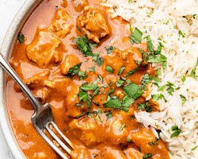

Chicken Karahi
Chicken Karahi is a popular Pakistani dish that is made
with chicken, onions, tomatoes, and a variety of
spices. It is a relatively easy dish to make,
and it is perfect for a quick and delicious weeknight meal.
Ingredients
- 1 pound boneless, skinless chicken breasts, cut into bite-sized pieces
- 1 tablespoon oil
- 1 onion, chopped
- 2 cloves garlic, minced
- 1 inch piece of ginger, peeled and minced
- 1 teaspoon ground cumin
- 1 teaspoon ground coriander
- 1 teaspoon turmeric powder
- 1/2 teaspoon cayenne pepper
- 1/2 teaspoon salt
- 1/4 teaspoon black pepper
- 1 (14.5 ounce) can diced tomatoes, undrained
- 1/2 cup plain yogurt
- 1/4 cup chopped cilantro
Instructions
- Heat the oil in a large karahi or skillet over medium heat.
Add the chicken and cook until browned on all sides.
- Add the onion, garlic, and ginger to the karahi.
Cook until the onion is softened.
- Add the cumin, coriander, turmeric, cayenne pepper, salt, and
pepper to the karahi. Cook for 1 minute, stirring constantly.
- Add the diced tomatoes and yogurt to the karahi. Bring to a simmer
and cook for 15 minutes, or until the chicken is cooked through.
- Stir in the cilantro and serve with rice or naan.

Chicken Tikka Masala
This chicken tikka masala is so good, it will make you feel
good! In fact, you might even forget that it's healthy! So
next time you're looking for a delicious and satisfying
meal that won't weigh you down, give this chicken tikka
masala a try. You won't be disappointed.
But be warned! This chicken tikka masala is so good,
you might eat the whole thing yourself! So make sure
you have enough for seconds (or thirds).
I hope you enjoy this recipe!
Ingredients
- 1 pound boneless, skinless chicken breasts, cut into 1-inch pieces
- 1 tablespoon olive oil
- 1 onion, chopped
- 2 cloves garlic, minced
- 1 teaspoon ground cumin
- 1 teaspoon ground coriander
- 1 teaspoon turmeric powder
- 1/2 teaspoon cayenne pepper
- 1/2 teaspoon salt
- 1/4 teaspoon black pepper
- 1 (14.5 ounce) can diced tomatoes, undrained
- 1 cup vegetable broth
- 1/2 cup heavy cream
- 1/4 cup chopped cilantro
Instructions
- Heat the olive oil in a large skillet over medium heat. Add the chicken and cook until
browned on all sides.
- Add the onion and garlic to the skillet and cook until softened.
- Add the cumin, coriander, turmeric powder, cayenne pepper, salt, and pepper to the
skillet and cook for 1 minute, stirring constantly.
- Add the diced tomatoes, vegetable broth, and heavy cream to the skillet. Bring to a
boil, then reduce heat to low and simmer for 15 minutes, or until the chicken is cooked
through.
- Stir in the cilantro and serve over rice or naan.